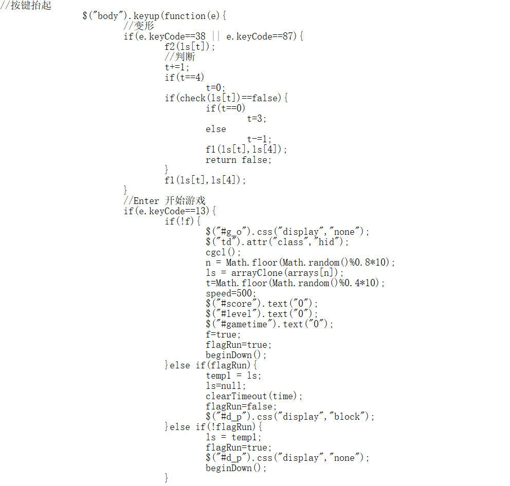
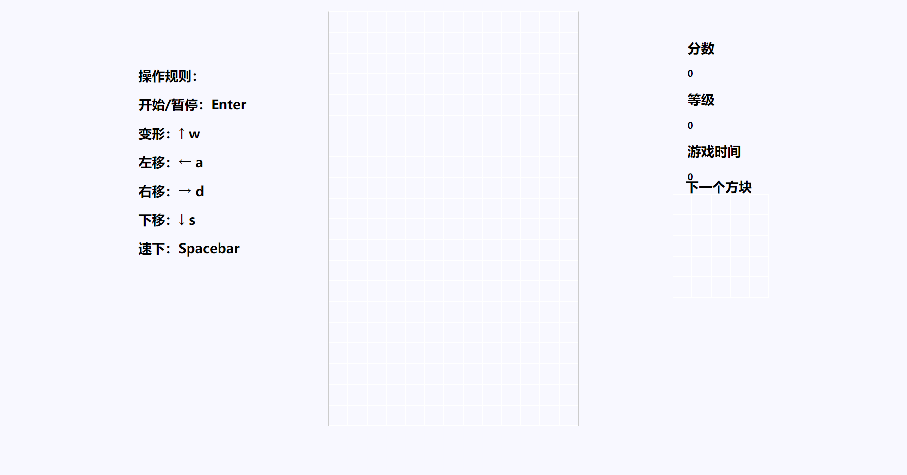

我们小组此次课程设计选择做的题目是俄罗斯方块，俄罗斯方块是一款很经典的电子游戏，我们每个人都玩过很多次，这款游戏在放松人心之余，又能开拓人的思维方式，是一款非常不错而又设计简单的游戏，于是我们就决定通过课上学到的知识以及课外知识自己亲手去设计一款俄罗斯方块游戏，在原有的基础上，对页面进行更加精美的设计，同时也添加一些不一样的玩法供给用户体验，让用户体验到不一样的俄罗斯方块。
此次课程设计，我们小组由丘嘉宏、魏泽伟组成，丘嘉宏主要负责对网页界面的设计，达到网页布局更加合理、网址正常打开、标题显示正常、图片正确显示、增加一些页面元素让网页更加美观等几点要求；而魏泽伟则负责俄罗斯方块的功能设计，达到消行功能正常、能统计分数、显示下一方块、方块旋转、随着分数提升方块下落速度加快、开始暂停结束等要求。魏泽伟为本次设计的主要负责人，他负责对俄罗斯方块的功能进行设计。
在页面设计上，我们用到了HTML里的div标签，将操作规则、分数等级时间、下一个方块等放到块中，通过设置div的属性值来设计网页布局，让网页看起来更加美观，布局更加合理;而在功能设计上，通过接收键盘上的值来判断游戏的开始暂停,通过键盘的值来操作方块，进行旋转、下落、暂停等操作时会调用相应的函数来执行相应的语句，主要的就是对各种操作的函数的代码编写，以及各种情况的判断，判断下一方块，判断键值，判断分数段，判断方块种类以及变形情况，这些对于我们这些对网页代码还不是了解太深的人还是有挑战的，而在方块方面的设计是，消除一行可得到11分score，随着分数查出各分数段（[0-100speed 500，[100-200） speed 350, [200-300） speed 250, [300-400） speed 150, [400-+∞） speed 100），方块下落速度speed也会做出相应的调整。以下附上的是关键代码：
通过Math.floor(Math.random（）%0.8*10)来计算n的值，n的值对应的是八种方块（S形，Z形，反L形，L形,一形,T形，田形,点形）中的一种，因为一种方块的图形的变化最多为4种，所以后面的Math.floor(Math.random（）%0.4*10)是计算对应的方块，当我们得到方块后，方块下落。
以下为网页截图：
本次设计中我们也遇到了许多的问题，还好在同学网络老师的共同帮助下，我们的问题也得到了解决，首先遇到的问题就是网页乱码问题，后来通过网上查询我们知道了是网页编码的不同导致的，通过修改网页的编码格式我们就把乱码问题解决了；主要问题就是对网页编码还是不太熟悉，对这方面的练习还是太过缺乏锻炼，在编码格式方面还是有许多问题，不过这需要一个很长的过程，我们也只能慢慢通过学习模仿来提高网页源代码编写方面的能力。